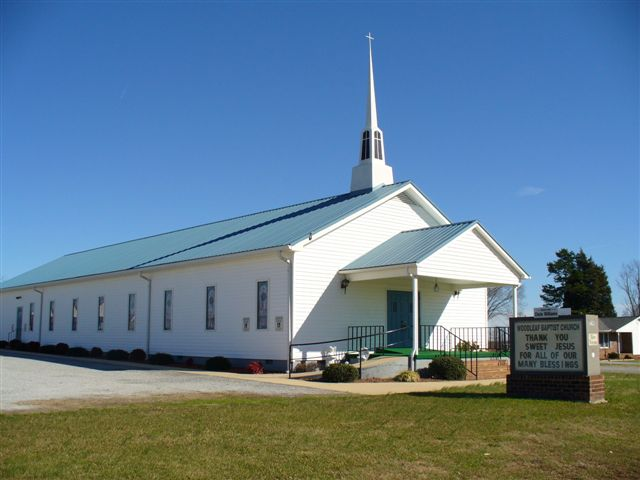

We are an old-fashioned country church. Our goal as a church is to be obedient to the LORD's Will and help our fellow man. We are involved in Ministries to the local prison, homeless shelter and numerour nursing homes. Our services are casual dress,
because our goal is the condition of your hear before God, not your wardrobe before men. We are broken people with plenty of problems, but with God's help we are joyfully facing each day with a smile and looking forwar to our Lord's return.

Woodleaf Baptist Church 7790 Woodleaf Rd Woodleaf, North Carolina 27054